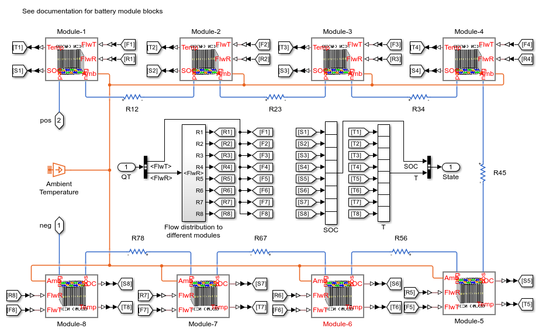

Battery Thermal Management
This example shows how to model an automotive battery pack for thermal management tasks. The battery pack consists of several battery modules, which are combinations of cells in series and parallel. Each battery cell is modeled using the Battery (Table-Based) Simscape Electrical block. In this example, the initial temperature and the state of charge are the same for all cells. Eight battery modules, six of one type and two of another type, are connected in series to simulate a battery pack. The Battery Controls subsystem defines the logic to determine the battery pack flowrate for the applied current load.
Contents
Model Overview
The example models a battery pack connected to an auxiliary power load from a chiller, as defined in Current sensor and Aux. load (pump) subsystem. The BatteryControl subsystem defines how much coolant flowrate is required to cool the HV-BatteryPack. A controlled current source defines DC current demand from the HV-BatteryPack subsystem.

Battery Cell Overview
The battery cell is modeled using the equivalent circuit method. The equivalent circuit parameters used for each cell can be found in the initialization file Battery_Pack_Thermal_Management_ini.m. To characterize a lithium-ion cell, this example uses a 2-RC model. No cell capacity fade or charge leakage is considered in this example.

Build Battery Pack
The HV-BatteryPack is made up of 8 series connected Battery Modules. Module 1-3 & 6-8 are of same type, with each module consisting of 3 parallel Pouch type cells per series of 12 such strings. Module 4 & 5 are of the same type, with each module consisting of 3 parallel cells per series of 16 such strings. All modules have same type of Pouch cells with the total number of cells in the HV-BatteryPack being equal to 312 (6 modules of 12X3 cells and 2 modules of 16X3 cells). With each cell being rated at approx. 3.8V/cell, the total pack voltage is close to 400V (~395V). The different modules in this 400V HV-BatteryPack are connected together using busbars, modeled as lumped resistors (R12, R23, R34... R78). The coolant flow maldistrubtion occurs in the pack with modules farther away receiving lesser flow-rate, as specified in the Flow_maldistribution_to_different_Modules subsystem.
Define Battery Controls
The FlwR_calc subsystem calculates a value for the input FlwR for all modules in the HV-BatteryPack. Pump power loss is calculated based on FlwR value, with 500W being the maximum pump power consumption. Pump power is assumed to have a linear relationship with FlwR, as specified in the subsystem Pump_power_calc.

Simulation Results
This example uses the parameters defined in the Battery_Pack_Thermal_Management_ini.m file and the results of the simulation is shown below.